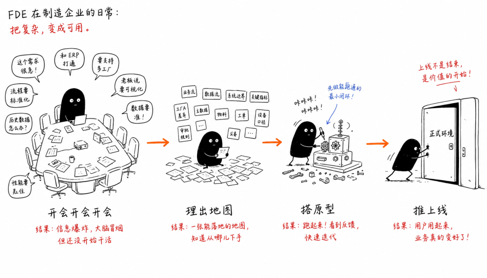
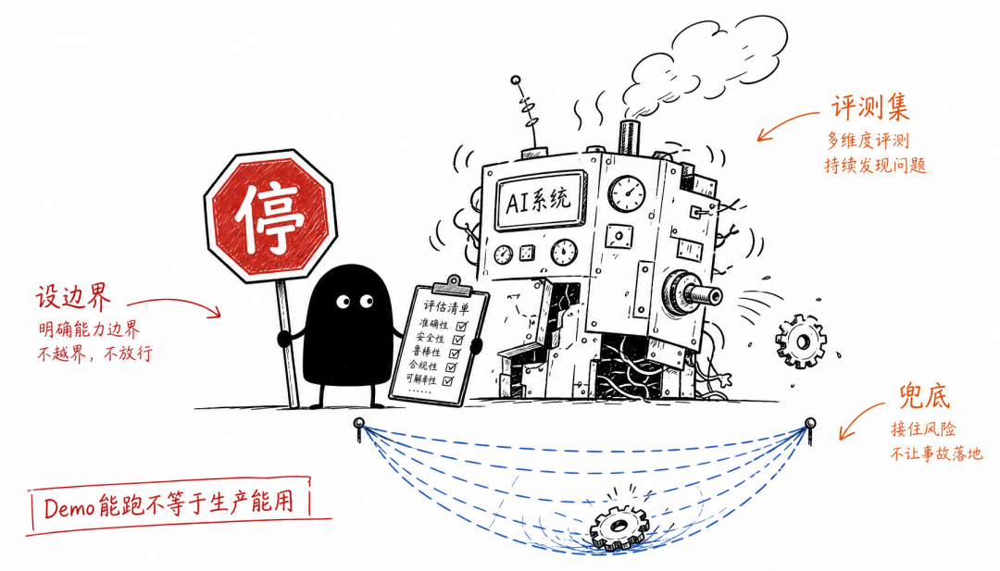

我最开始理解 FDE，也容易把它想成"更靠近客户的工程师"。
后来做了几个 AI 项目，又折腾过自己的多平台内容发布系统，我才意识到：FDE 真正的门槛不在代码，而在把 AI 放进真实流程。
一个真实例子：文章发布也会暴露 FDE 问题
拿我自己的内容工作流举例。表面需求很简单：把公众号文章同步到知乎、CSDN、掘金、头条、百家号、B站专栏和简书。
如果只看技术，似乎就是"调接口"或"控制浏览器"。但真跑起来以后，问题一层一层冒出来：
- 头条后半段格式被压坏；
- 草稿箱里出现重复草稿；
- 图片里可能藏着二维码、Token、内网地址；
- 有的平台会出现不该勾选的 AI 生成声明；
- 浏览器标签页开太多，机器内存开始吃紧；
- "提交成功"不等于公开页真的可访问。
这个时候，真正要解决的已经不是"能不能自动发文章"，而是：怎样建立一套不会乱发、不会重复、能审核、能返修、能留下证据的发布流程。

FDE 的工作：把模糊需求拆进真实流程，再把流程做成可验证的系统FDE 不是高级程序员
Forward Deployed Engineer 通常译作"前线部署工程师"。代码当然重要，但在很多现场，写代码不是最难的部分。更难的是判断：
- 这个问题值不值得用 AI；
- 当前流程到底卡在哪里；
- 哪些数据能用，哪些不能碰；
- 谁会因为新系统受益，谁会担心被替代；
- 出错以后谁负责，怎么兜底；
- 怎么证明它真的比旧流程好。
这些问题没有一个能靠"模型更强"自动解决。
第一种能力：价值判断
很多企业都会说"我要用 AI"。但不是所有问题都值得做 AI。一个低频、风险高、必须人工签字确认的场景，未必适合作为第一仗。相反，一个每天都发生、依赖人工复制粘贴和经验判断的流程，哪怕只改善一部分，也可能很有价值。
我现在会先问几个土问题：
- 这件事是不是高频？
- 现在是不是很依赖人肉搬运？
- 出错代价能不能控制？
- 业务方愿不愿意参与验证？
如果这些都答不上来，先别急着写代码。
第二种能力：问题重构
客户说"我要知识库问答"，真实问题可能不是问答。可能是老员工经验快断了；可能是新人不知道在什么条件下该找哪份资料；也可能是流程责任不清，大家只是希望 AI 帮忙背锅。
FDE 要做的，是把表层需求翻译成真实问题。这一步很容易得罪人，因为你不能只顺着需求做。你要继续问：为什么要做？谁会用？不用的原因是什么？如果 AI 答错了，谁来接？问到这里，方案才开始接近真实。
第三种能力：快速构建
快速构建不是从零写一大套系统。很多时候，现成模型、低代码工具、RAG、Agent 框架和一点脚本组合起来，就够做第一版验证。
重点不是写得多快，而是用最小成本验证最关键的假设。比如我的多平台发布系统，第一版不应该追求"全平台全自动发布"。更合理的是先跑通一篇文章、一个平台、一次公开页复核，确认标题、图片、尾注、声明和草稿清理都可控，再扩大范围。
我也是踩过坑后才收回来的。
第四种能力：评测和护栏
Demo 能跑，不代表生产能用。AI 系统一旦进入业务，就必须有边界：
- 哪些场景允许自动处理；
- 哪些结果必须人工确认；
- 日志怎么留；错误怎么回滚；
- 权限怎么管；公开页面怎么复核。

没有护栏，AI 越能干，风险越大没有这些护栏，AI 越能干，风险越大。我现在尤其警惕"接口返回成功"这种假安全感——返回成功只说明动作发出去了，不说明用户看到的是正确结果。
第五种能力：组织推动
系统上线不等于被采用。一线员工可能不信任它，IT 可能担心权限，老板可能只想看到立刻降本。每个人的担心都是真的。
FDE 不能只把系统交出去，然后说"你们用吧"。它要帮业务方理解边界，找一个低风险场景先试，让真正承受痛点的人参与验证，再用结果推动下一步。这不是搞关系，而是让系统进入真实工作。
程序员想走这条路，从哪开始
FDE 的核心不是"会很多技术"，而是能在技术、业务和人之间来回翻译。技术能把 Demo 做出来，业务决定它值不值得做，人决定它最后会不会被用起来。
别一开始就追求大项目。先找一个熟悉的小流程，明确权限和责任边界，做一次可验证的改进，再把过程记录下来。
我是小天说FDE，程序员出身，做过嵌入式软件、Linux 和制造业安防摄像机系统，现在 all in AI。FDE 系列文章全网将近十万阅读，这个系列会持续更新。